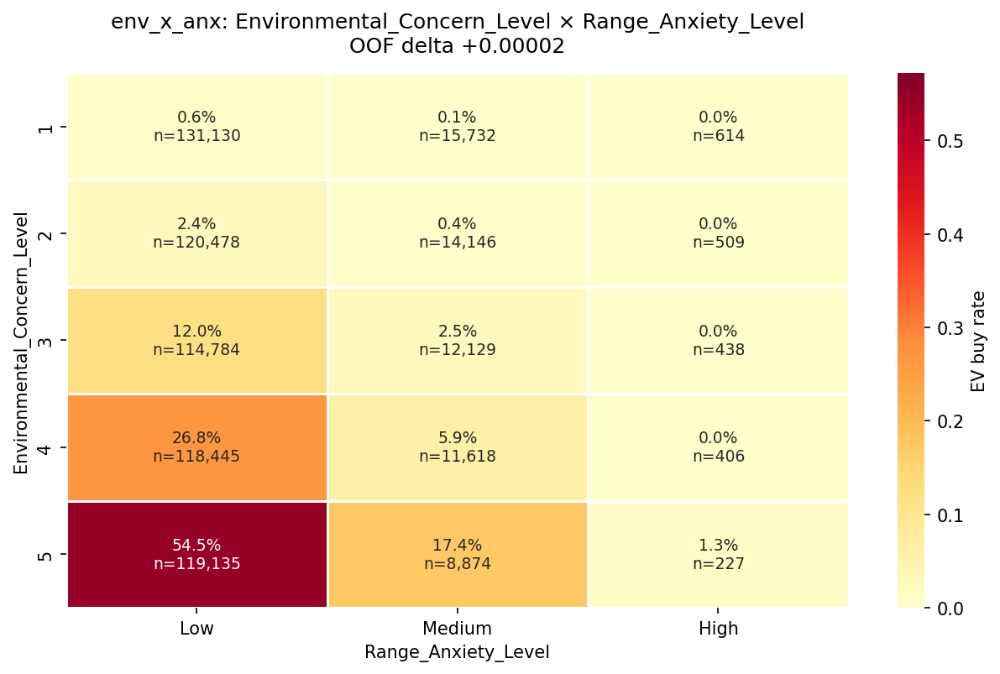
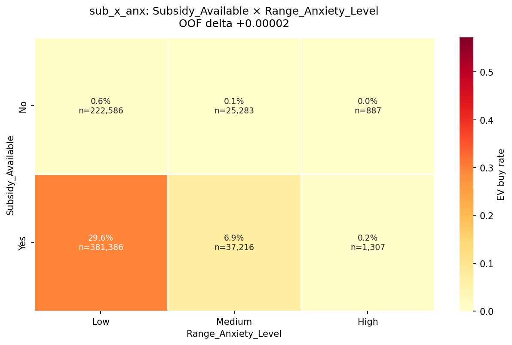
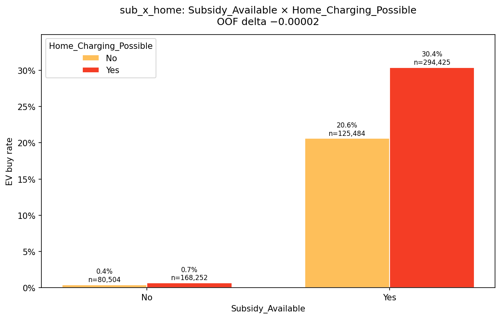
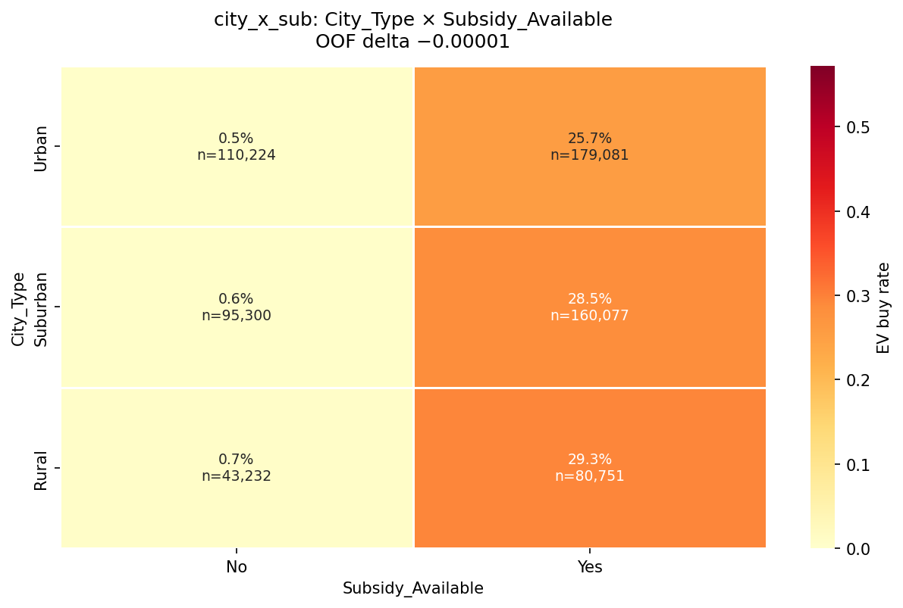
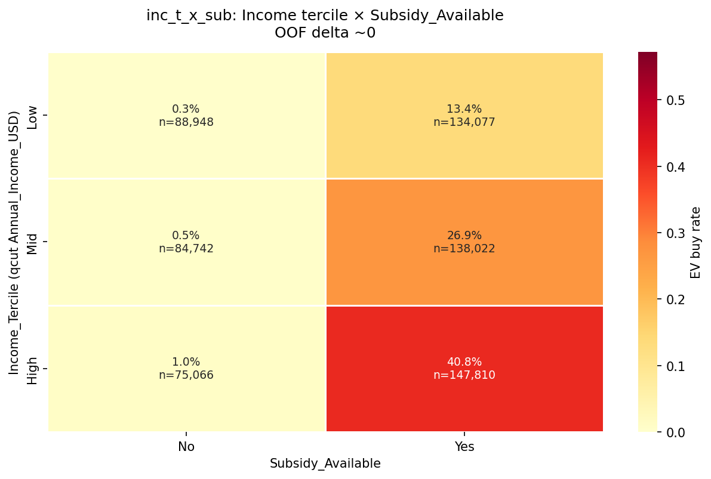
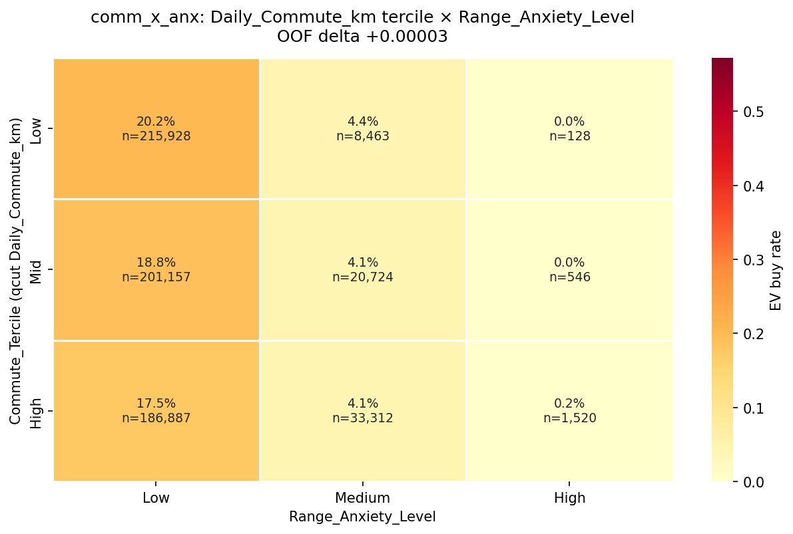
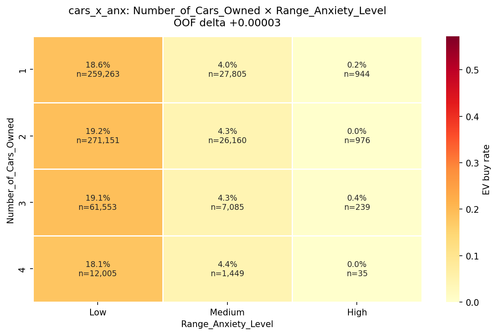

EV purchase — interaction rate graphs
Observed EV buy rates across selected feature combinations.
Environmental Concern × Range Anxiety

Environmental concern lifts EV rates sharply when anxiety is low, reaching 54.5%; medium anxiety reduces the lift to 17.4%.
Subsidy × Range Anxiety

Subsidy availability raises EV rate from 0.6% to 29.6% at low anxiety, but high anxiety keeps both groups near zero.
Subsidy × Home Charging

With no subsidy, home charging barely changes EV rate; with subsidy, charging availability lifts it from 20.6% to 30.4%.
City Type × Subsidy

Subsidy raises EV rates across city types, from 25.7% urban to 29.3% rural, while unsubsidized rates remain below 1%.
Income Tercile × Subsidy

Subsidy impact grows with income: EV rate reaches 40.8% for high-income buyers versus 13.4% low-income, while no-subsidy rates stay near zero.
Commute Tercile × Range Anxiety

Low anxiety shows slightly higher EV rates for shorter commutes, while medium anxiety stays near 4% and high anxiety is essentially zero.
Cars Owned × Range Anxiety

Across car-ownership levels, low anxiety stays near 18–19%, medium anxiety near 4%, and high anxiety remains at or below 0.4%.